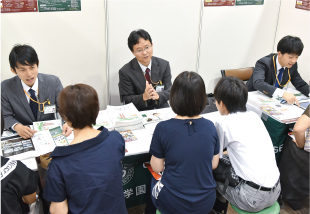
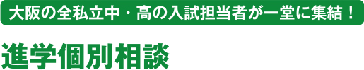
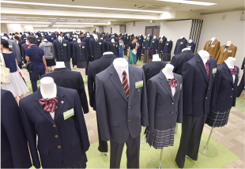
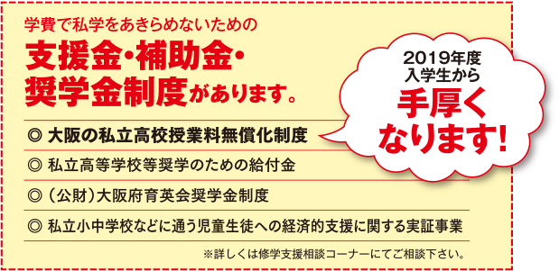
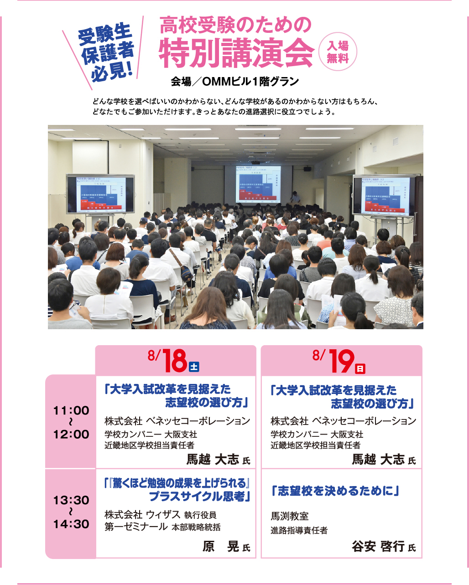

大阪の私立中・高の入試担当者が一堂に集結し、開催2日間とも、進学相談に応じます。希望校の先生に直接相談できるチャンスです。どんな小さなことでも聞いてみましょう。入試に向けてきっと役立ちます。ぜひ参加ください。
※学校によっては、進学相談希望が多数の場合、お待ちいただいたり、合同での学校説明等になる場合があります。
各学校の2019年入試の募集要項や学校案内等最新情報だけでなく、その学校の雰囲気や個性が伝わるパンフレットは、見ていても楽しいものです。先入観にとらわれず、いろんな学校の資料を見てみましょう。もちろん気になる学校は積極的に進学相談コーナーへ行き直接話を聞いてください。新しい発見があるかもしれません。

毎日着る制服もチェック！実物を見ると「この制服の学校に行きたい！」と意欲が高まります。最近は男子の制服のバリエーションも豊富になりましたので、男の子もぜひ見てください。
※展示は希望校のみです。
学費が高いと思われている私立高校ですが、要件を満たせば、大阪府の無償化制度や奨学金貸付制度を利用することができ、学費負担を抑えられます。開催2日間とも、担当者が説明しますので、学費が心配で進路を迷っている方は、ここで話を聞いてみてください。

